토목기사 (2009-03-01 기출문제)
1과목: 응용역학
1. 다음 그림과 같은 구조물의 부정정 차수를 구하면?
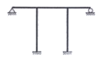
- 3차 부정정
- 4차 부정정
- 5차 부정정
- 6차 부정정
(정답률: 53%)

2. 정 6각형틀의 각 절점에 그림과 같이 하중 P가 작용할 때 각 부재에 생기는 인장응력의 크기는?
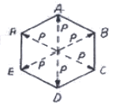
- P
- 2P
- P/2
- P/√2
(정답률: 74%)
3. 그림과 같은 캔틸레버 트러스에서 DE 부재의 부재력은?
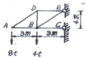
- 4t
- 5t
- 6t
- 8t
(정답률: 58%)
4. 15cm×25cm의 직사각형 단면을 가진 길이 4.5m인 양단힌지 기둥이 있다. 세장비 λ는?
- 62.4
- 124.7
- 100.1
- 103.9
(정답률: 57%)
5. 그림과 같은 구조물에서 B점에 발생하는 수직반력 값은?
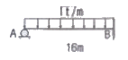
- 6t
- 8t
- 10t
- 12t
(정답률: 50%)
6. 그림과 같은 구조물에서 B지점의 휨모멘트는?
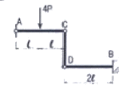
- -3Pℓ
- -4Pℓ
- -6Pℓ
- -12Pℓ
(정답률: 67%)
7. 외반경 R1, 내반경 R2인 중공(中空) 원형단면의 핵은? (단, 핵의 반경을 e로 표시함)
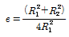
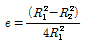
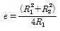
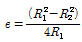
(정답률: 40%)
8. 균질한 균일 단면봉이 그림과 같이 P1, P2, P3의 하중을 B, C, D점에서 받고 있다. 각 구간의 거리 a=1.0m, b=0.4m, c=0.6m 이고 P2=10t, P3=5t 의 하중이 작용할 때 D점에서의 수직방향 변위가 일어나지 않기 위한 하중 P1은 얼마인가?
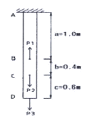
- 5t
- 6t
- 8t
- 24t
(정답률: 72%)
9. 그림과 같은 구조물에서 C점의 수직처짐을 구하면? (단, EI=2×109kgㆍcm2이며 자중은 무시한다.)
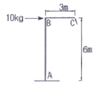
- 2.7mm
- 3.6mm
- 5.4mm
- 7.2mm
(정답률: 69%)
10. 아래 그림의 단면에서 도심을 통과하는 z축에 대한 극관성모멘트(polar moment of inertia)는 23cm4이다. y축에 대한 단면 2차 모멘트가 5cm4이고, x'축에 대한 단면 2차 모멘트가 40cm4이다. 이 단면의 면적은? (단, x, y축은 이 단면의 도심을 통과한다.)
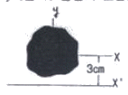
- 4.44cm2
- 3.44cm2
- 2.44cm2
- 1.44cm2
(정답률: 44%)
11. 다음의 보에서 점 C의 처짐은?
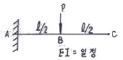
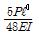
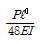
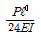
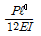
(정답률: 58%)
12. 다음 3힌지 아치에서 수평반력 HB를 구하면?
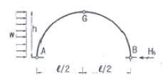
- 1/4wh
- 1/2wh
- wh/4
- 2wh
(정답률: 68%)
13. 다음 부정정보의 b단이 ℓ°만큼 아래로 처졌다면 a단에 생기는 모멘트는? (단, ℓ°/ℓ=1/600 이다.)
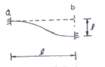
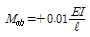
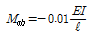
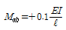
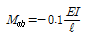
(정답률: 59%)
14. 그림과 같은 2축응력을 받고 있는 요소의 체적변형률은? (단, 탄성계수 E=2×106kg/cm2, 포아송비 v=0.2 이다.)
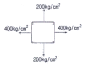
- 1.8×10-4
- 3.6×10-4
- 4.4×10-4
- 6.2×10-4
(정답률: 68%)
15. 다음 그림에서 나타낸 단순보의 b점에 하중 5t이 연직방향으로 작용하면 e점에서의 휨모멘트는?
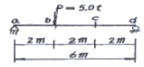
- 3.33tㆍm
- 5.4tㆍm
- 6.67tㆍm
- 10.0tㆍm
(정답률: 54%)
16. 휨 모멘트가 M인 다음과 같은 직사각형 단면에서 A-A에서의 휨응력은?
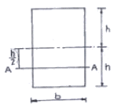
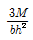
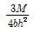
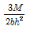
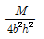
(정답률: 57%)
17. 폭 10cm, 높이 20cm인 직사각형 단면의 단순보에서 전단력 S=4t 이 작용할 때 최대전단응력은?
- 10kg/cm2
- 20kg/cm2
- 30kg/cm2
- 40kg/cm2
(정답률: 58%)
18. 2경간 연속보의 중앙지점 B에서의 반력은? (단, E, I는 일정하다.)
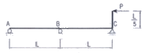
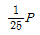
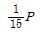
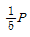
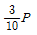
(정답률: 54%)
19. 한 점에서 바깥쪽으로 작용하는 두 힘 F1=10t, F2=12t이 45°의 각을 이루고 있을 때 그 합력은?
- 30.0t
- 32.4t
- 24.2t
- 20.3t
(정답률: 54%)
20. 재질과 단면이 같은 다음 2개의 외팔보에서 자유단의 처짐을 같게 하는 P1/P2의 값은?
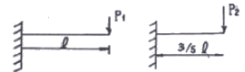
- 0.216
- 0.437
- 0.325
- 0.546
(정답률: 77%)
2과목: 측량학
21. 원곡선에서 교각이 30°이고 곡선 반지름이 500m이며 시곡점의 추가거리가 150m일 때, 중곡점의 추가거리는?
- 404.675m
- 411.799m
- 426.743m
- 430.451m
(정답률: 55%)
22. 축척 1/500 지형도를 기초로 하여 축척 1/2500의 지형도를 같은 크기로 편참하려 한다. 1/2500 지형도를 한 도면에 1/500 지형도가 몇 매 필요한가?
- 5매
- 10매
- 15매
- 25매
(정답률: 68%)
23. 다음 하천측량의 설명 중 틀린 것은?
- 고저측량에 기준이 되는 고저기준점은 양안 약 20km마다 설치한다.
- 고저측량의 거리표는 하천 중심에 직각방향으로 양안의 제방 법견에 설치한다.
- 측심측량은 하천의 수심 및 유수부분의 하저상황을 조사하고 횡단면도를 제작하는 측량이다.
- 횡단측량은 200m 마다의 거리표를 기준으로 선상의 고저를 측량하는 것으로 지면이 평탄한 경우에도 5~10m 간격으로 관측한다.
(정답률: 50%)
24. 전진법에 의하여 6각형 토지를 측정하였다. 측점 A를 출발하여 B, C, D, E, F, A에 돌아왔을 때 폐합오차가 20cm 였다면 측점 D점의 오차분배량은? (단, AB=60m, BC=50m, CD=30m, DE=50m, EF=40m, FA=20m)
- 0.033m
- 0.⑤6m
- 0.112m
- 0.156m
(정답률: 50%)
25. 항공사진측량에서 입체감을 얻기 위한 입체사진의 조건으로 옳지 않은 것은?
- 기선고도비(B/H)가 적당한 값이어야 한다.
- 두매의 사진축척은 모델 형성을 위해 다른 것이 좋다.
- 한 쌍의 사진을 촬영한 사진기의 광축은 거의 동일 평면에 있어야 한다.
- 장시간 입체시할 경우에는 축척차가 5% 이상은 좋지 않다.
(정답률: 47%)
26. A, B, C 각 점에서 P점까지 수준측량을 한 결과가 표와 같다. 거리에 대한 경중률을 고려한 P점의 최확 표고는?
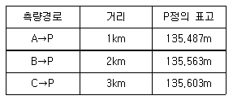
- 135.529m
- 135.551m
- 135.563m
- 135.570m
(정답률: 55%)
27. 다음과 같은 삼각형 ABC의 면적은?
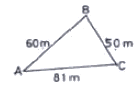
- 153.04m2
- 235.09m2
- 1495.57m2
- 2227.50m2
(정답률: 52%)
28. 기선 D=20m, 수평각 α=80°, β=70°, 면직각 V=40°를 측정하였다. 높이 H는? (단, A, B, C 점은 동일 평면임)
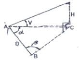
- 31.54m
- 32.42m
- 32.63m
- 33.⑤m
(정답률: 55%)
29. 사진의 크기와 촬영고도가 같을 경우 초광각 사진기에 의한 촬영면적은 광각 사진기에 의한 촬영면적의 약 몇 배가 되는가?
- 1/3
- 1
- 3배
- 5배
(정답률: 49%)
30. 어느 각을 10번 측정하여 52° 12‘ 0“를 2번, 52° 13’ 0”를 4번, 52° 14‘ 0“를 4번 얻었다. 측정한 각의 표준편차는?
- ±51.3“
- ±47.3“
- ±36.2“
- ±21.2“
(정답률: 29%)
31. 그림과 같이 다각측량으로 터널의 중심선측량을 실시할 경우 측선 AB의 길이는 얼마인가?
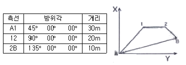
- AB=36.95m
- AB=44.33m
- AB=45.95m
- AB=50.31m
(정답률: 38%)
32. 시속 200km/h의 비행기로 초점거리 150mm의 카메라로 축척 1:6000의 사진을 촬영할 때 사진의 허용 흔들림이 0.02mm이면 셔터속도는 얼마 이내로 하여야 하는가?
- 1/382초
- 1/409초
- 1/436초
- 1/463초
(정답률: 38%)
33. 다음 중 U.T.M 도법에 대한 설명으로 옳지 않은 것은?
- 중앙 자오선에서 축척 계수는 0.9996 이다.
- 좌표계 간격은 경도를 6°씩, 위도는 8°씩 나눈다.
- 우리나라는 51구역(ZONE)과 52구역(ZONE)에 위치하고 있다.
- 경도의 원점은 중앙자오선에 있으며 위도의 원점은 북위 38°이다.
(정답률: 45%)
34. 각 관측에서 시준오차가 ±10°이고 읽기오차가 ±5“인 경우 단각법에 의해 하나의 각을 관측하는데 발생하는 각 관측오차는 얼마인가?
- ±11“
- ±15“
- ±16“
- ±23“
(정답률: 17%)
35. 삼각형 ABC의 각을 동일한 정확도로 관측하여 다음과 같은 결과를 얻었다. ∠C의 보정각은?
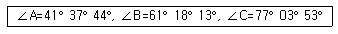
- 77° 03‘ 51“
- 7° 03‘ 53“
- 7° 03‘ 55“
- 7° 03‘ 57“
(정답률: 47%)
36. 노선설치에서 단곡선을 설치할 때 곡선의 중앙종거(M)를 구하는 식은?
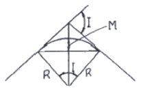
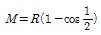
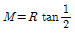
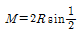
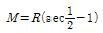
(정답률: 52%)
37. 캔트(cant)의 계산에 있어서 도를 4배, 반지름을 2배로 할 경우 캔트(cant)는 몇 배가 되는가?
- 2배
- 4배
- 6배
- 8배
(정답률: 60%)
38. 다음 중 지형 공간 정보 체계의 자료 처리 체계로 가장 적절하게 배열된 것은?
- 부호화 - 자료정비 - 자료입력 - 조작처리 - 출력
- 자료입력 - 부호화 - 자료정비 - 조작처리 - 출력
- 자료입력 - 자료정비 - 부호화 - 조작처리 - 출력
- 부호화 - 조작처리 - 자료정비 - 자료입력 - 출력
(정답률: 45%)
39. 삼각점 A에 기계를 설치하여 삼각점 B가 시준되지 않기 때문에 점 P를 관측하여 T'=68° 32' 15"를 얻었을 때 보정 각 T는? (단, S=1.3km, e=5m, ψ=302° 56')
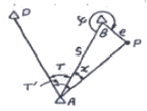
- 69° 21' 09"
- 68° 48' 07"
- 68° 21' 09"
- 69° 18' 07"
(정답률: 40%)
40. 다음 중 완화곡선의 종류가 아닌 것은?
- 램니스케이트 곡선
- 배향 곡선
- 클로소이드 곡선
- 반파장 체감곡선
(정답률: 45%)
3과목: 수리학 및 수문학
41. 다음 중 토양의 침투능(infiltration Capacity) 결정방법에 해당되지 않는 것은?
- 침투계에 의한 실측법
- 경험공식에 의한 계산법
- 침투지수에 의한 방법
- 물수지 원리에 의한 산정법
(정답률: 65%)
42. 그림과 같은 철근 콘크리트 케이슨을 해수에 띄었을 때 그 홀수선가지의 높이 x는? (단, 해수의 비중=1.025, 철근 콘크리트의 단위중량=2.4t/m3)
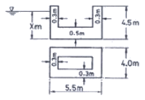
- x=2.85m
- x=3.44m
- x=3.85m
- x=4.0m
(정답률: 34%)
43. 다음의 강우강도가 대한 설명 중 틀린 것은?
- 강우깊이(mm)가 일정할 때 강우지속시간이 길면 강우강도는 커진다.
- 강우강도와 지속시간의 관계는 Talbot, Sherman, Japanese형 등의 경험공식에 의해 표현된다.
- 강우강도식은 지역에 따라 다르며, 자기우량계의 우량 자료로부터 그 지역의 특성 정수를 결정한다.
- 강우강도식은 댐, 우수관거 등의 수공구조물의 중요도에 따라 그 설계 재현기간이 다르다.
(정답률: 69%)
44. 개수로 내의 흐름에 가장 많이 적용되는 수류상사 법칙은?
- Reynolds의 상사법칙
- Froude의 상사법칙
- Mach의 상사법칙
- Weber의 상사법칙
(정답률: 61%)
45. 그림과 같이 원형관을 통하여 정상 상태로 흐를 때 관의 축소부로 인한 수두 손실은? (단, V1=0.5m/s, D1=0.2m, D2=0.1m, fC=0.36)
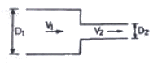
- 0.46cm
- 0.92cm
- 3.65cm
- 7.30cm
(정답률: 35%)
46. 저수지에서 홍수량을 방류하기 위한 직사각형의 여수로 단면(Spillway)을 결정하고자 한다. 계획홍수량이 100m3/sec이고 월류 수심을 1m로 제한하였을 때 적당한 여수로의 월류 폭은?
- 100m
- 55m
- 10m
- 5m
(정답률: 45%)
47. 거리가 50m일 때 손실수두가 1m인 직4각형 개수로의 유량을 Manning의 평균유속공식을 사용하여 구한 값은? (단, 수로폭=10m, 수심=2m, 수로의 조도계수=0.03)
- 120 m3/sec
- 100 m3/sec
- 80 m3/sec
- 60 m3/sec
(정답률: 47%)
48. Hardy-Cross의 관망계산시 가정조건에 대한 설명으로 옳은 것은?
- 합류점에 유입하는 유량은 그 점에서 1/2만 유출된다.
- Hardy-Cross 방법은 관경에 관계없이 관수로의 분할 객수에 의해 유량 분배를 하면 된다.
- 각 분기점에 유입하는 유량은 그 점에서 정지하지 않고 전부 유출한다.
- 폐합관에서 시계방향 또는 반시계 방향으로 흐르는 관로의 손실수두의 합은 0 이 될 수 없다.
(정답률: 50%)
49. 다음 중 심정호(深井戶)를 옳게 설명한 것은?
- 깊이가 지하 100m 이상일 때
- 정호 바닥이 불투수층에 달하였을 때
- 정호 바닥이 불투수층을 지나서 새로운 대수층에 달하였을 때
- 깊이가 불투수층에서 100m 이상일 때
(정답률: 51%)
50. 다르시(Darcy)의 법칙에 대한 설명으로 옳은 것은?
- 지하수 흐름이 층류일 경우 적용된다.
- 투수계수는 무차원의 계수이다.
- 유속이 클 때에만 적용된다.
- 유속이 동수경사에 반비례하는 경우에만 적용된다.
(정답률: 65%)
51. 다음 중 유역의 평균 강우량 산정방법이 아닌 것은?
- 산술평균법
- 등우선법
- Thiessen의 가중법
- 기하평균법
(정답률: 57%)
52. 내부반지름(r)이 100cm인 원형강척관 속에 작용하고 있는 수압(p)이 10kg/cm2이다. 강철관의 허용인장응력(σta)이 1000kg/cm2이라고 할 때 관의 소요두께는?
- 0.1cm
- 1.0cm
- 10.0cm
- 100.0cm
(정답률: 54%)
53. 도수 전후의 충력치(비력)를 각각 M1, M2_라 할 때 M1, M2의 크기와 충력치에 대한 설명으로 옳은 것은?
- 충력치란 물의 충격에 의해서 생기는 힘을 말하며, M1=M2
- 충력치란 한계수심에서의 비에너지를 말하며 M1>M2
- 충력치란 개수로내 한 단면에서의 물의 단위 무게당 정수압과 운동량의 합을 말하며, M1=M2
- 충력치란 비에너지가 최대가 되는 수심에서의 역적을 말하며, M1
(정답률: 50%)
54. 물체의 흐름방향 투영면적을 A, 항력계수를 C0, 유체의 밀도를 ρ, 단위중량을 w, 중력가속도를 g라고 할 때 유속 V인 유수 중에 놓여 있는 물체가 받는 진저항력 D는?
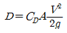
(정답률: 70%)
55. 면적 10㎢의 지역에 3시간에 10mm의 강우강도로 무한히 내릴 때 평형유출량(Qe)은 약 얼마인가?
- 9.72 m3/sec
- 9.26 m3/sec
- 8.94 m3/sec
- 8.33 m3/sec
(정답률: 51%)
56. 시간 매개변수에 대한 정의 중 틀린 것은?
- 첨두시간은 수문곡선이 상승부 변곡점부터 첨두유량이 발생하는 시각까지의 시간차이다.
- 지체시간은 유효우량주상도의 중심에서 첨두유량이 발생하는 시각까지의 시간차이다.
- 도달시간은 유효유량이 끝나는 시각에서 수문곡선의 강수부 변곡정까지의 시간차이다.
- 기저시간은 직접유출이 시작되는 시각에서 끝나는 시각까지의 시간차이다.
(정답률: 47%)
57. 속도변화를 △v, 질량을 m이라 할 때, △t 시간에 외력 F가 작용할 때의 운동량 방정식은?
- Fㆍ△v=mㆍ△t
- F=mㆍ△vㆍ△t
- Fㆍ△t=mㆍ△v
(정답률: 52%)
58. Bernoulli 정리가 성립하기 위한 조건으로 틀린 것은?
- 완전유체의 하나의 유선에 대하여 성립한다.
- 흐름은 정류이다.
- 압축성 유체에 성립한다.
- 외력은 중력만 작용한다.
(정답률: 60%)
59. 다음의 유량 중 수로폭이 3m인 직사각형 수로에 수심이 50cm로 흐를 때 흐름이 상류가 되는 것은?
- 2.5 m3/sec
- 4.5 m3/sec
- 6.5 m3/sec
- 8.5 m3/sec
(정답률: 53%)
60. 그림과 같이 W의 각속도로 회전할 때 ha까지 물이 올라 왔다가 정지한 후 높이는 h가 되었다. ha, h, ho의 관계식으로 옳은 것은?
(정답률: 40%)
4과목: 철근콘크리트 및 강구조
61. 슬래브와 일체로 시공된 그림의 직사각형 단면 테두리보에서 비틀림에 대해서 설계에서 고려하지 않아도 되는 계수 비틀림모멘트 Tw의 최대 크기는 약 얼마인가? (단, fck=24MPa, fy=400MPa, 비틀림에 대한 ∅는 0.75)
- 29.5 kNㆍm
- 17.5 kNㆍm
- 9.9 kNㆍm
- 3 kNㆍm
(정답률: 21%)
62. 강도 설계시 T형보에서 t=100mm, d=300mm, bw=200mm. b=800mm, fck=20MPa, fy=420MPa, As=2000mm2일 때 등가응력 사각형의 깊이는?
- 51.8mm
- 61.8mm
- 71.8mm
- 81.8mm
(정답률: 50%)
63. 콘크리트의 압축강도(fck)가 35MPa, 철근의 항복강도(fy)가 400MPa, 폭이 350mm, 유효깊이가 600mm인 단철근 직사각형보의 최소 철근량은 얼마인가?
- 690mm2
- 735mm2
- 777mm2
- 816mm2
(정답률: 49%)
64. 그림과 같은 단면의 중간 높이에 초기 프리스트레스 900kN을 작용시켰다. 20%의 손실을 가정하여 하단 또는 상단의 응력이 영(零)이 되도록 이 단면에 가할 수 있는 모멘트의 크기는?
- 90 kNㆍm
- 84 kNㆍm
- 72 kNㆍm
- 65 kNㆍm
(정답률: 52%)
65. 다음 그림의 PSC보에서 PS강재를 포물선으로 배치하여 긴장할 때 하중평형 개념으로 계산된 프리스트레스에 위한 상향 등분호하중 u의 크기는? (단, P=1400kN, s=0.4m이다.)
- 31kN/m
- 24kN/m
- 19kN/m
- 14kN/m
(정답률: 42%)
66. 그림과 같은 2경간 연속보의 양단에서 PS강재를 긴장할 때 단(端) A에서 중간 B까지의 마찰에 의한 프리스트레스의 (근사적인) 감소율은? (단, 곡률 마찰계수 μ=0.4, 파상마찰계수 k=0.0027)
- 12.6%
- 18.2%
- 10.4%
- 15.8%
(정답률: 12%)
67. Mu=170kNㆍm의 계수 모멘트 하중에 대한 단철근 직사각형 보의 필요한 철근량 As를 구하면? (단, 보의 폭 b=300mm, 보의 유효깊이 d=450mm, fck=28MPa, fy=350MPa, ∅=0.85 이다.)
- 1070mm2
- 1175mm2
- 1280mm2
- 1375mm2
(정답률: 43%)
68. 도로교의 충격계수(I)식으로 옳은 것은? (단, L은 지간(m))
(정답률: 42%)
69. 깊은 보(deep beam)의 강도는 다음 중 무엇에 의해 지배되는가?
- 압축
- 인장
- 휨
- 전단
(정답률: 49%)
70. 옹벽의 안정조건 중 전도에 대한 저항모멘트는 횡토압에 의한 전도모멘트의 최소 몇 배 이상이어야 하는가?
- 1.5배
- 2.0배
- 2.5배
- 3.0배
(정답률: 34%)
71. fck=28MPa, fy=350MPa로 만들어지는 보에서 압축 이형철근으로 D29(공칭지름 28.6mm)를 사용한다면 기본정착길이는?
- 412mm
- 446mm
- 473mm
- 522mm
(정답률: 55%)
72. 2방향 슬래브 설계시 직접설계법을 적용할 수 있는 제한사항을 설명한 것으로 잘못된 것은?
- 각 방향으로 3경간 이상이 연속되어야 한다.
- 슬래브판들은 단변 경간에 대한 장변 경간의 비가 2이하인 직사각형이어야 한다.
- 연속한 기둥 중심선으로부터 기둥의 이탈은 이탈방향 경간의 최대 10%까지 허용할 수 있다.
- 활화중은 고정하중의 4배 이하이어야 한다.
(정답률: 42%)
73. 강도설계법에 의해서 전단 철근을 사용하지 않고 계수 하중에 의한 전단력 Vu=50kN을 지지하려면 직사각형 단면보의 최소 면적(bmd)은 약 얼마인가? (단, fck=28MPa이며, 최소 전단철근도 사용하지 않는 경우 이며, 전단에 대한 ø=0.75)
- 151190mm2
- 123530mm2
- 97840mm2
- 49320mm2
(정답률: 56%)
74. 다음 중 전단철근으로 사용할 수 없는 것은?
- 부재축에 직각으로 배치한 용접철망
- 주인장 철근에 30°의 각도로 설치되는 스터럽
- 나선철근, 원형 띠철근 또는 후프철근
- 스터럽과 굽힘철근의 조합
(정답률: 55%)
75. 순단면이 볼트의 구멍 하나를 제외한 단면(즉, A-B-C 단면)과 가도록 피치(s)의 값을 결정하면? (단, 볼트의 직경은 19mm 이다.)
- s=114.9mm
- s=90.6mm
- s=66.3mm
- s=50mm
(정답률: 49%)
76. 철근콘크리트가 성리보디는 조건으로 옳지 않은 것은?
- 철근과 콘크리트와의 부착력이 크다.
- 철근과 콘크리트의 열팽창계수가 거의 같다.
- 철근과 콘크리트의 탄성계수가 거의 같다.
- 철근과 콘크리트 속에서 녹이 슬지 않는다.
(정답률: 55%)
77. 그림과 같은 띠철근 기둥에서 띠철근의 최대 간격으로 적당한 것은? (단, D10의 공칠직경은 9.5mm, D32의 공칭직경은 31.8mm)
- 400 mm
- 450 mm
- 500 mm
- 550 mm
(정답률: 47%)
78. As=3600mm2, As'=1200mm2로 배근된 그림과 같은 복철근 보의 탄성처짐이 12mm라 할 때 5년 후 지속하중에 의해 유발되는 장기처짐은 얼마인가? (단, 5년 후 지속하중 재하에 따른 계수 ξ=2.0이다.)
- 36mm
- 18mm
- 12mm
- 6mm
(정답률: 44%)
79. 강도감소계수 ∅를 규정하는 목적으로 적당하지 않은 것은?
- 재료 강도와 치수가 변동할 수 있으므로 부재의 강도저하 확률에 대비한 여유
- 구조물에서 차지하는 부재의 중요도를 반영
- 계산의 단순화로 인해 야기될지 모르는 초과하중의 영향에 대비한 여유
- 부정확한 설계 방정식에 대비한 여유
(정답률: 50%)
80. 철근의 정책에 대한 다음 설명중 옳지 않은 것은?
- 휨철근을 정착할 때 절단점에서 Vu가 (3/4)Vn을 초과하지 않을 경우 휨철근을 인장구역에서 절단해도 좋다.
- 갈고리는 압축을 받는 구역에서 철근정착에 유효하지 않은 것으로 보아야 한다.
- 철근의 인장력을 부착만으로 전달할 수 없는 경우에는 표준 갈고리를 병용 한다.
- 단순부재에서는 정모멘트 철근의 1/3이상, 연속부재에서는 정모멘트 철근의 1/4 이상을 부재의 같은 면을 따라 받침부까지 연장하여야 한다.
(정답률: 33%)
5과목: 토질 및 기초
81. 압밀이론에서 선행압밀하중에 대한 설명 중 옳지 않은 것은?
- 현재 지반 중에서 과거에 받았던 최대의 압밀하중이다.
- 압밀소요시간의 추정이 가능하여 압밀도 산정에 사용된다.
- 주로 압밀시험으로부터 작도란 e-log P 곡선을 이용하여 구할 수 있다.
- 현재의 지반 응력상태를 평가할 수 있는 과압밀비 산정시 이용된다.
(정답률: 36%)
82. 흙의 일축압축 강도시험에 관한 설명 중 옳지 않은 것은?
- Mohr원이 하나밖에 그려지지 않는다.
- 점성이 없는 사질토의 경우는 시료자립이 어렵고 배수상태를 파악할 수 없어 일반적으로 점성토에 주로 사용된다.
- 배수조건에서의 시험경과 밖에 얻지 못한다.
- 일축압축 강도시험으로 결정할 수 있는 시험 값으로는 일축압축 강도, 예민비, 변형계수 등이 있다.
(정답률: 37%)
83. 깊은 기초의 지지력 쳥가에 관한 설명 중 잘못된 것은?
- 정역학적 지지력 추정방법은 논리적으로 타당하나 강도정수를 추정하는데 한계성을 내포하고 있다.
- 동역학적 방법은 항타장비, 말뚝과 지반조건이 고려된 방법으로 해머 효율의 측정이 필요하다.
- 현장 타설 콘크리트 말둑 기초는 동역학적 방법으로 지지력을 추정한다.
- 말뚝 항타분석기(PDA)는 말둑의 응력분포, 경시 효과 및 해머 효율을 파악할 수 있다.
(정답률: 56%)
84. 그림과 같은 지층단면에서 지표면에 가해진 5t/m2의 상재 하중으로 인한 점토층(정규압밀점토)의 1차압밀 최종침하량(S)을 구하고, 침하량이 5cm일 때 평균압밀도(U)를 구하면?
- S=18.5cm, U=27%
- S=14.7cm, U=22%
- S=18.5cm, U=22%
- S=14.7cm, U=27%
(정답률: 42%)
85. 실내시험에 의한 점토의 강도 증가율(Cu/P)산정 방법이 아닌 것은?
- 소성지수에 의한 방법
- 비배수 전단강도에 의한 방법
- 압밀비배수 상축압축시험에 의한 방법
- 직접전단시험에 의한 방법
(정답률: 53%)
86. 다짐에 대한 다음 설명 중 옳지 않은 것은?
- 세립토의 비율이 클수록 최적함수비는 증가한다.
- 세립토의 비율이 클수록 최대건조 단위중량은 증가한다.
- 다짐에너지가 클수록 최적함수비는 감소한다.
- 최대건조 단위중량은 사질토에서 크고 점성토에서 작다.
(정답률: 52%)
87. 연약한 점성토의 지반특성을 파악하기 위한 현장조사 시험방법에 대한 설명 중 틀린 것은?
- 현장베인시험은 연약한 점토층에서 비배수 전단강도를 직접 산정할 수 있다.
- 정적콘관입시험(CPT)은 콘지수를 이용하여 비배수 전단강도 추정이 가능하다.
- 표준관입시험에서의 N값은 연약한 점성토 지반특성을 잘 반영해 준다
- 정적콘관입시험(CPT)은 연속적인 지층분류 및 전단강도 추정 등 연약점토 특성분석에 매우 효과적이다.
(정답률: 56%)
88. Paper Drain설계시 Drain Paper의 폭이 10cm, 두께가 0.3cm일 때 드레인 페이퍼의 등치환산원의 직경이 얼마이면 Sand Drain과 동등한 값으로 볼 수 있는가? (단, 형상계수 : 0.75)
- 5cm
- 7.5cm
- 10cm
- 15cm
(정답률: 46%)
89. 다음은 말뚝을 시공할 때 사용되는 해머에 대한 설명이다. 어떤 해머에 대한 것인가?
- 증기해머
- 진동해머
- 디젤해머
- 드롭해머
(정답률: 42%)
90. 그림과 같이 3층으로 되어 있는 성층토의 수평방향의 평균투수계수는?
- 2.97×10-4cm/sec
- 3.04×10-4cm/sec
- 6.97×10-4cm/sec
- 4.04×10-4cm/sec
(정답률: 60%)
91. Mohr 응력원에 대한 설명 중 옳지 않은 것은?
- 임의 평면에 응력상태를 나타내는데 매우 편리하다.
- 평면기점(origin of plane, 0?)은 최소주응력을 나타내는 원호상에서 최소주응력면과 평행선이 만나는 점을 말한다.
- σ1과 σ3의 차의 백터를 반지름으로 해서 그린 원이다.
- 한 면에 응력이 작용하는 경우 전단력이 0 이면, 그 연직응력을 주 응력으로 가정한다.
(정답률: 53%)
92. 현장다짐을 실시한 루 들밀도시험을 수행하였다. 파낸 흙의 체적과 무게가 각각 365.0cm3, 745g이었으며, 함수비는 12.5%였다. 흙의 비중이 2.65이며, 실내표준다짐시 최대건조단위 중량이 r dmax=1.90t/m3일 때 상대다짐도는?
- 88.7%
- 93.1%
- 95.3%
- 97.8%
(정답률: 58%)
93. 부마찰력에 대한 설명으로 틀린 것은?
- 부마찰력을 줄이기 위하여 말뚝표면을 아스팔트 등으로 코팅하여 타설한다.
- 지하수의 저하 또는 입밀이 진행중인 연약지반에서 부마찰력이 발생한다.
- 점성토 위에 사질토를 성토한 지반에 말뚝을 타설한 경우에 부마찰력이 발생한다.
- 부마찰력은 말뚝을 아래 방향으로 작용하는 힘이므로 결국에는 말뚝의 지지력을 증가시킨다.
(정답률: 58%)
94. 그림과 같은 경우의 투수량은? (단, 투수지반의 투수계수는 2.4×10-3cm/sec이다.)
- 0.0267m3/sec
- 0.267m3/sec
- 0.864m3/sec
- 0.0864m3/sec
(정답률: 48%)
95. 흙의 물리적 성질 중 잘못된 것은?
- 점성토는 흙 구조 배열에 따라 면모구조와 이산구조로 대별하는데, 면모구조가 전단강도가 크고 투수성이 크다.
- 점토는 확산 이중층까지 흡착되는 흡착구에 의해 점성을 띤다.
- 소성지수가 클수록 비배수성이 된다.
- 활성도가 클수록 안정해지며 소성지수가 작아진다.
(정답률: 47%)
96. 모래의 밀도에 따라 일어나는 전단특성에 대한 다음 설명 중 옳지 않은 것은?
- 다시 성형한 시료의 강도는 작아지지만 조밀한 모래에서는 시간이 경과 됨에 따라 강도가 회복 된다.
- 전단저항각 [내부마찰각(∅)]은 조밀한 모래일수록 크다.
- 직접 전단시험에 있어서 전단응력과 수평변위 곡선은 조밀한 모래에서는 peak가 생긴다.
- 조밀한 모래에서는 전단변형이 계속 진행되면 부피가 팽창한다.
(정답률: 37%)
97. 흙의 비중이 2.60, 함수비 30%, 간극비 0.80일 때 포화도는?
- 24.0%
- 62.4%
- 78.0%
- 97.5%
(정답률: 61%)
98. 토압론에 관한 다은 설명 중 틀린 것은?
- Coulomb의 토압론은 강체역학에 기초를 둔 흙쐐기 이론이다.
- Rankine의 토압론은 소성이론이 의한 것이다..
- 벽체가 수동토압이라 하고 벽체가 흙쪽으로 밀리도록 작용하는 힘을 주동토압이라 한다
- 정지 토압계수의 크기는 수동토압곗와 주동토압계수사이에 속한다.
(정답률: 51%)
99. 다음 그림과 같이 물이 흙 속으로 아래에서 침투할 때 분사현상이 생기는 수두차(△h)는 얼마인가?
- 1.16m
- 2.27m
- 3.58m
- 4.13m
(정답률: 50%)
100. 어떤 점토의 토질실험 일축압축강도 0.48kg/cm2, 단위중량 1.7t/m3이었다. 이 점토의 한계고는?
- 6.34m
- 4.87m
- 9.24m
- 5.65m
(정답률: 52%)
6과목: 상하수도공학
101. 다음 하수처리 방법에 대한 설명 중 옳지 않은 것은?
- 활성슬러지법은 부유생물을 이용한 처리 방법이다.
- 호기성여상법은 부유생물을 이용한 처리 방법이다.
- 회전생물접촉법은 생물막을 이용한 처리 방법이다.
- 산화지법은 부유생물을 이용한 처리 방법이다.
(정답률: 37%)
102. 상수도의 펌프 시스템과 관련된 다음 설명 중 옳징 않은 것은?
- 펌프의 공동현상(cavitation)은 펌프 내에 수증기가 포화수증기압 이하로 되어 ㅡ 부분의 물이 증발하게 되어 발생한다.
- 공동현상을 방지하기 위해서는 이용할 수 있는 유효흡입수두가 펌프에서 필요로 하는 유효흡입수두보다 작게해야 한다.
- 수격작용(water hammering)은 펌프의 급가동 및 급중지시 발생한다.
- 압력조절수조(surge tank)를 설치하여 수격작용을 방지할 수 있다.
(정답률: 49%)
103. 저탁도 원수를 대상으로 하여 소량의 응집제를 주입한 후 플록형성과 침전처리를 하지 않고 여과하는 것을 무엇이라 하는가?
- 급속여과
- 간이여과
- 직접여과
- 단축여과
(정답률: 27%)
104. 하수관의 관정부식을 일으키는 황화수소(H2S)가 발생하는 이유는?
- 황화합물은 하수관에 유입되면 메탄가스에 의해 환원되기 때문이다.
- 용존산소가 부족해서 황화합물을 산화시키기 때문이다.
- 용존산소가 풍부해서 황화합물을 산화시키기 때문이다.
- 용존산소다 없으면 혐기성 세균이 황화합물을 분해하여 환원기키기 때문이다.
(정답률: 39%)
1⑤. 소화조에 함수율 96%인 슬러지 1000kg이 유입되었다. 소화를 통하여 유입슬러지내 고형물 중 유기성분의 60%가 분해 된다고 가정한다면 소화 후 슬러지의 건조질량은? (단, 유입슬러지내 고형물 중 유기성분의 비율은 70%, 슬러지 비중 1.0)
- 23.2kg
- 25.6kg
- 28.4kg
- 30.5kg
(정답률: 12%)
106. 합류식 하수관거에 관한 설명으로 옳은 것은?
- 우천시 월류가 발생하지 않는다.
- 우수관과 오수관을 별도로 매설해야 하므로 비용이 많이 든다.
- 관거오접에 대한 철저한 감시가 필요하다.
- 우수를 신속히 배제하기 위해 지형에 적합한 관망으로 관거를 계획한다.
(정답률: 40%)
107. Jar-Test는 적정 응집제의 주입량과 적정 pH를 결정하기 위한 시험이다. Jar-Test 시 응집제를 주입한 후 급속교반후 완속교반을 하는 이유는?
- 응집제를 용해 시키기 위해서
- 응집제를 고르게 섞기 위해서
- 플록이 고르게 퍼지게 하기 위해서
- 플록을 깨뜨리지 않고 성장시키기 위해서
(정답률: 63%)
108. 하수도계획의 목표년도는 원칙적으로 몇 년 정도인가?
- 10년
- 20년
- 30년
- 40년
(정답률: 63%)
109. 대장균은 인체에 해롭지는 않으나 먹는 물에 검출될 경우 오염수로 판정된다. 그 이유는?
- 대장균은 번식시 독소를 분비하여 인체에 해를 끼치기 때문이다.
- 대장균은 병원균이기 때문이다.
- 사람이나 동물의 체내에 서식하므로 병원성 세균의 존재 추정이 가능하기 때문이다.
- 대장균은 반드시 병원균과 공존하기 때문이다.
(정답률: 58%)
110. 75% 효율의 펌프로 0.35m3/sec믜 물을 16m의 총양정으로 퍼올릴 때 요구되는 펌프의 축동력은?
- 약 73kW
- 약 787kW
- 약 95kW
- 약 106kW
(정답률: 65%)
111. 계획오수량에 대한 설명 중 옳지 않은 것은?
- 계획1일최대오수량은 처리시설의 용량을 결정하는 기초수량이다.
- 계획오수량은 생활오수량, 공장폐수량, 지하수량으로 구분한다.
- 지하수량은 1인1일최대오수량의 10~20%로 한다.
- 계획시간최대오수량은 계획1이평균오수량의 1시간당 수량의 1.1~1.3배를 표준으로 한다.
(정답률: 55%)
112. 슬러지 용적지수(SVI)에 관한 설명 중 옳지 않은 것은?
- 폭기조 내 혼합물을 30분간 정치한 후 침강한 1g의 슬러지가 차지하는 부피(mL)로 나타낸다.
- 정상적으로 운전되는 폭기조의 SVI는 50~150 범위이다.
- SVI는 슬러지 밀도지수(SDI)에 100을 곱한 값을 의미한다.
- SVI는 폭기시간, BOS농도, 수온 등에 영향을 받는다.
(정답률: 55%)
113. 활성슬러지법에서 BOD 용적부하를 옳게 표현한 것은?
(정답률: 66%)
114. 집수매거(infiltration galleries)에 관한 설명 중 옳지 않은 것은?
- 집수매거는 복류수의 흐름 방향에 대하여 지형 등을 고려하여 가능한 직각으로 설치하는 것이 효율적이다.
- 집수매거의 매설깊이는 5m 이상으로 하는 것이 바람직하다.
- 집수매거 내의 유속은 유출단에서 1m/sec 이하가 되도록 한다.
- 집수매거의 집수개구부(공) 직경은 10~15cm를 표준으로 하고, 그 수는 관거표면적 1m2당 40~50개로 한다.
(정답률: 38%)
115. 하수관거의 직선부에서 맨홀(Man hole)의 관경에 대한 최대 간격의 표준으로 옳지 않은 것은?
- 관경 600mm 이하의 경우 최대간격 50m
- 관경 600mm 초과 1000mm 이하의 경우 최대간격 100m
- 관경 1000mm 초과 1500mm 이하의 경우 최대간격 150m
- 관경 1650mm 이상의 경우 최대간격 200m
(정답률: 43%)
116. 유출계수가 0.5인 계획구역의 배수면적이 90㎢이고 유달 시간내 평균 강우강도가 16mm/hr 일 때 합리식에 이한 최대 계획 우수유출량은?
- 100 m3/sec
- 200 m3/sec
- 1000 m3/sec
- 2000 m3/sec
(정답률: 63%)
117. 정수처리시 색도를 제거하기 위한 방법과 가장 거리가 먼 것은?
- 오존처리
- 염소처리
- 활성탄처리
- 응집침전처리
(정답률: 37%)
118. 다음 그림은 펌프의 표준 특성곡선이다. 전양정을 나타내는 곡선은 어느 것인가? (단, Ns:100~250)
- A
- B
- C
- D
(정답률: 49%)
119. 취수장의 침사지의 설계에 관한 설명 중 틀린 것은?
- 침사지의 형상은 장방향으로 하고 길이가 폭의 3~8배를 표준으로 한다.
- 침사지 내에서의 평균유속은 2~7cm/min를 표준으로 한다.
- 침사지의 유효수심은 3~4m를 표준으로 하고, 퇴사심도는 0.5~1m로 한다.
- 침사지의 체류시간은 계획취수량의 10~20분을 표준으로 한다.
(정답률: 40%)
120. 다음의 취수시설에 대한 설명 중 틀린 것은? (단, 하천수를 수원으로 하는 경우)
- 취수탑은 최소 수심이 2m 이상인 장소에 위치하여야 한다.
- 취수문은 유속이 큰 지역에 주로 설치되므로 토사의 유입 위험이 거의 없다.
- 취수보는 일반적으로 대하천에 적당하다.
- 취수문의 위치는 지반이 견고한 지점에 위치하여야 한다.
(정답률: 55%)